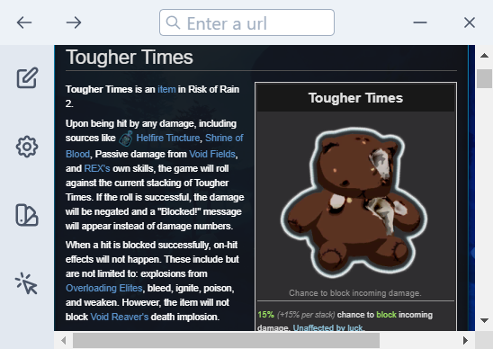
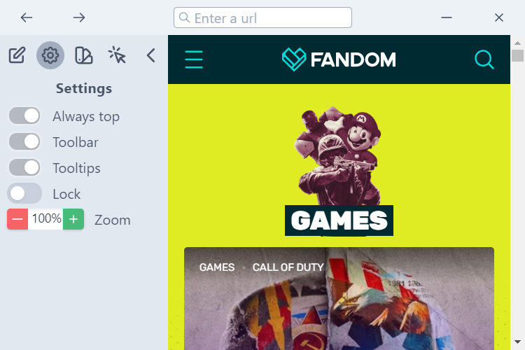
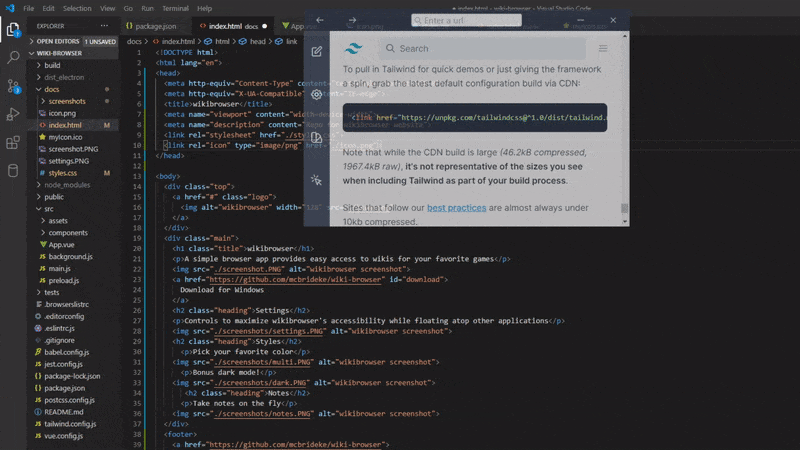

wikibrowser
A simple browser app provides easy access to wikis for your favorite games
 Download for WindowsSettings
Controls to maximize wikibrowser's accessibility while floating atop other applications
Styles
Pick your favorite color
Bonus dark mode!

Notes
Take notes on the fly

Click Through
Click through ignores mouse inputs on the app, hover the red icon to turn it back off
Works great for coding as well as games